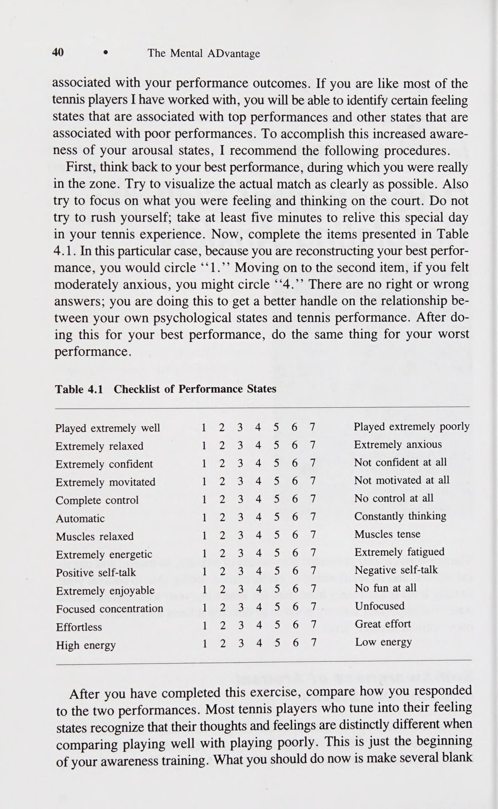
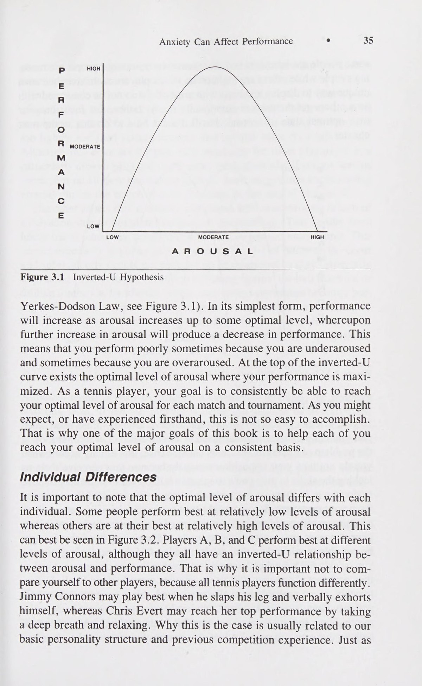
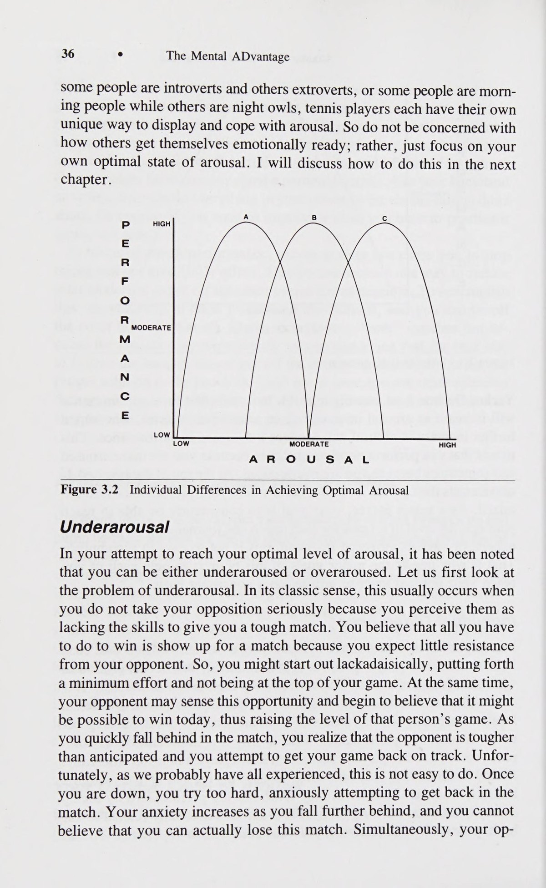
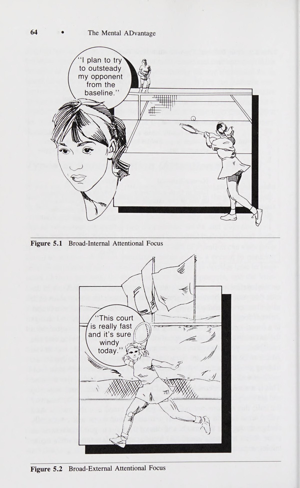
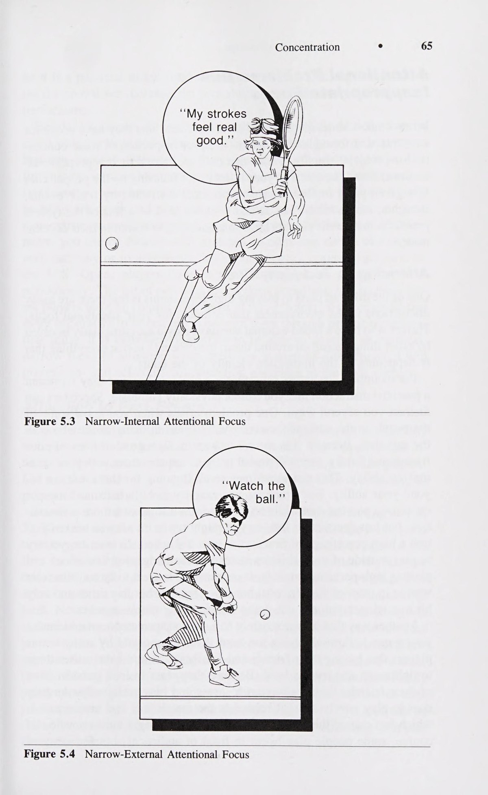
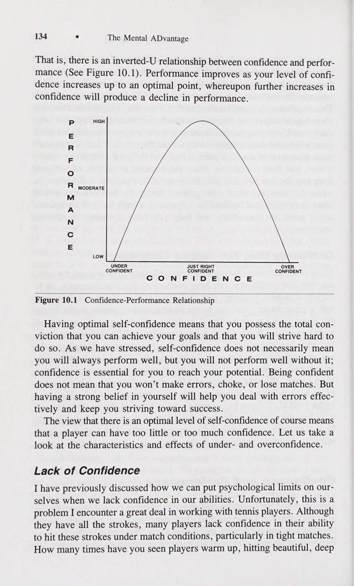

Phần I: Bản Chất Thử Thách Tâm Lý Quần Vợt & Giả Thuyết Chữ U Ngược
Tại sao quần vợt là môn thể thao khốc liệt nhất về mặt tâm thần, mối quan hệ giữa mức độ kích hoạt và hiệu suất, và kỹ năng điều tiết lo âu
1. Chương 1: Tại Sao Quần Vợt Là Môn Thể Thao Khốc Liệt Nhất Về Mặt Tâm Lý?
Tiến sĩ Robert S. Weinberg — chuyên gia tâm lý học thể thao danh tiếng thế giới của Human Kinetics — mở đầu tác phẩm bằng một câu hỏi cốt lõi: Tại sao quần vợt lại tạo ra nhiều sự căng thẳng và khủng hoảng tâm lý hơn hầu hết các môn thể thao khác?
Thứ nhất, tính chất cô độc tuyệt đối trên sân đấu. Khác với các môn thể thao đồng đội như bóng đá hay bóng rổ — nơi vận động viên có thể dựa vào đồng đội hoặc được huấn luyện viên xin hội ý để giải tỏa áp lực — tay vợt đơn hoàn toàn đơn độc giữa bốn góc sân. Không có ai thay thế bạn khi bạn mệt mỏi, và không ai có thể bước vào sân thi đấu thay bạn khi những sai lầm liên tiếp xuất hiện.
Thứ hai, cấu trúc thời gian của trận đấu. Trong một trận đấu kéo dài hai giờ đồng hồ, thời gian bóng thực sự lăn trên sân (thời gian bóng sống) chỉ chiếm khoảng hai mươi đến hai mươi lăm phút! Hơn bảy mươi lăm phần trăm tổng thời gian còn lại là "thời gian chết" — lúc bạn đi nhặt bóng, bước về vạch giao bóng, lau mồ hôi hoặc ngồi nghỉ khi đổi sân. Đây chính là những khoảng trống nguy hiểm nơi những suy nghĩ tiêu cực, sự tự nghi ngờ và viễn cảnh thất bại tấn công tàn nhẫn vào tâm trí người chơi.
Thứ ba, hệ thống tính điểm độc nhất vô nhị. Quần vợt không tính điểm theo thời gian đồng hồ. Bạn không bao giờ có thể "câu giờ" để bảo toàn chiến thắng. Trận đấu chỉ kết thúc khi điểm số cuối cùng được ghi. Một tay vợt có thể thắng nhiều điểm số tổng thể hơn đối thủ nhưng vẫn thua chung cuộc nếu đánh mất những điểm then chốt (như Break Point hay Tie-break).
Chính vì vậy, rèn luyện kỹ năng tâm lý không phải là một lựa chọn phụ; đó là điều kiện tiên quyết quyết định sự sống còn của một tay vợt.
2. Chương 3: Giả Thuyết Chữ U Ngược (The Inverted-U Hypothesis) & Vùng Kích Hoạt Tối Ưu
Để giải thích tại sao phong độ của vận động viên lại trồi sụt thất thường dưới áp lực, tâm lý học thể thao ứng dụng Định luật Yerkes-Dodson, hay còn gọi là "Giả Thuyết Chữ U Ngược" (The Inverted-U Hypothesis).
Đồ thị biểu diễn mối quan hệ giữa "Mức Độ Kích Hoạt Thần Kinh" (Arousal - trạng thái hưng phấn sinh lý và tâm lý của cơ thể) và "Hiệu Suất Thi Đấu" (Performance) có hình dạng một chiếc chuông úp ngược:
Khi mức độ kích hoạt quá thấp (bên trái đồ thị): Cơ thể rơi vào trạng thái uể oải, buồn ngủ, phản xạ chậm chạp và thiếu động lực thi đấu. Người chơi dễ mắc các lỗi đánh bóng hỏng sơ đẳng do lơ là mất tập trung.
Khi mức độ kích hoạt tăng dần lên mức vừa phải: Hệ thần kinh được đánh thức, các giác quan trở nên sắc bén, cơ bắp phối hợp nhịp nhàng và hiệu suất thi đấu tăng vọt đạt đỉnh tại đỉnh cong của chữ U. Đây chính là "Vùng Hoạt Động Tối Ưu" (Zone of Optimal Functioning).
Khi mức độ kích hoạt vượt quá ngưỡng tối ưu (bên phải đồ thị): Cảm giác lo âu tột độ và hoảng loạn bắt đầu tàn phá cơ thể. Tim đập dồn dập, huyết áp tăng cao, các nhóm cơ bắp ở cổ, vai và cánh tay bị gồng cứng không kiểm soát. Tầm nhìn thị giác bị thu hẹp (hiện tượng nhìn qua đường hầm - Tunnel Vision), khiến tay vợt không còn khả năng phán đoán đường bóng của đối thủ và dẫn đến sự sụp đổ phong độ thảm hại.
Tiến sĩ Weinberg nhấn mạnh rằng: mỗi vận động viên sở hữu một vùng kích hoạt tối ưu mang tính cá nhân hóa sâu sắc (IZOF). Một số tay vợt cần phải hưng phấn mạnh mẽ, liên tục hô vang khẩu hiệu để thi đấu tốt; trong khi những tay vợt khác lại cần duy trì trạng thái trầm tĩnh, nhịp tim chậm rãi như mặt nước phẳng lặng mới có thể phát huy tối đa tài năng.
3. Chương 4: Kỹ Năng Tâm Lý Số 1 — Điều Tiết Căng Thẳng & Kỹ Thuật Định Tâm (Centering)
Làm thế nào để đưa cơ thể quay trở lại đỉnh của đường cong chữ U ngược khi bạn nhận thấy mình đang bị kích hoạt quá mức?
Phương pháp khoa học hiệu quả nhất là kết hợp giữa "Thư Giãn Cơ Bắp Tiến Triển" (Progressive Muscle Relaxation - PMR) và "Kỹ Thuật Định Tâm" (Centering):
Phương pháp PMR huấn luyện người chơi chủ động căng siết một nhóm cơ cụ thể trong năm giây rồi đột ngột thả lỏng hoàn toàn trong mười giây.
Bằng cách cảm nhận rõ rệt sự tương phản giữa co cơ và thả lỏng, vận động viên có thể nhận diện ngay lập tức khi nào cơ vai hoặc cơ tay của mình đang bị gồng cứng vô thức trong trận đấu.
Trong các tình huống thi đấu trực tiếp giữa hai điểm số, kỹ thuật Định tâm (Centering) là công cụ cứu cánh tức thì chỉ mất mười lăm giây:
Bước một: Đứng vững chắc, hạ thấp trọng tâm và hướng toàn bộ sự chú ý vào trọng tâm cơ thể nằm ngay phía sau rốn (trọng tâm vật lý).
Bước hai: Hít một hơi thật sâu bằng cơ hoành (thở bụng), để cơ bụng phình ra khi không khí tràn vào đáy phổi, giúp làm dịu hệ thần kinh giao cảm và hạ nhịp tim.
Bước ba: Khi từ từ thở ra bằng miệng, hãy cảm nhận toàn bộ sự căng thẳng ở khớp vai và quai hàm tan biến xuôi theo cánh tay xuống mặt đất.
Bước bốn: Nhắc lại một từ khóa neo tâm trí tích cực (ví dụ: "Bình tĩnh" hoặc "Sẵn sàng"), hướng mắt về phía đối thủ và bước vào điểm số tiếp theo với sự tự tin thanh thản.




Phần II: Làm Chủ Sự Tập Trung — Bốn Chiều Kích Tiêu Điểm Chú Ý Nideffer
Khám phá mô hình tiêu điểm chú ý của Robert Nideffer, cách thức chuyển dịch tiêu điểm linh hoạt và quy trình phục hồi giữa các điểm số
4. Chương 5: Bản Chất Của Sự Tập Trung Trong Quần Vợt Đỉnh Cao
Trong thi đấu thể thao đỉnh cao, cụm từ "Hãy tập trung!" là lời nhắc nhở quen thuộc nhất từ các huấn luyện viên.
Tuy nhiên, hầu hết các vận động viên không thực sự hiểu "tập trung" có nghĩa là gì.
Tiến sĩ Robert S. Weinberg định nghĩa: Sự tập trung trong quần vợt không phải là hành động gồng mình nhìn chằm chằm vào một điểm suốt hai giờ đồng hồ; điều đó sẽ nhanh chóng làm cạn kiệt năng lượng thần kinh của não bộ.
Sự tập trung thực chất là khả năng nhận diện các tín hiệu môi trường quan trọng, phớt lờ các yếu tố gây xao nhãng không liên quan, và chuyển dịch tiêu điểm chú ý một cách linh hoạt theo từng tình huống diễn biến trên sân.
Có hai nguyên nhân cốt lõi khiến người chơi đánh mất sự tập trung:
Thứ nhất, phân tâm do các yếu tố bên ngoài (External Distractions): tiếng ồn từ khán giả, tiếng còi xe bên ngoài sân, ánh nắng chói chang, gió thổi đổi chiều, hoặc hành vi câu giờ gây ức chế của đối thủ.
Thứ hai, phân tâm do các yếu tố nội tâm (Internal Distractions): đây mới là kẻ thù nguy hiểm nhất. Người chơi thường để tâm trí mắc kẹt ở quá khứ (dằn vặt vì một pha đánh bóng hỏng ở bàn trước) hoặc trôi dạt về tương lai (lo sợ viễn cảnh thua trận hoặc mơ mộng về khoảnh khắc ăn mừng chiến thắng khi tỷ số mới chỉ là năm-bốn).
Người chơi chỉ có thể đạt được phong độ tối thượng khi họ hoàn toàn hiện diện trong thực tại — ngay tại đường bóng trước mắt và trong khoảnh khắc này.
5. Mô Hình Bốn Chiều Kích Tiêu Điểm Chú Ý Nideffer (The Attentional Model)
Để giúp vận động viên làm chủ khả năng định hướng tâm trí, nhà tâm lý học Robert Nideffer đã phát triển mô hình bốn góc phần tư tiêu điểm chú ý dựa trên hai trục tọa độ: Chiều rộng (Rộng vs Hẹp) và Hướng chú ý (Bên Ngoài vs Bên Trong).
Một tay vợt xuất sắc là người biết cách chuyển đổi nhịp nhàng giữa bốn chiều kích này trong từng giai đoạn của trận đấu:
Chiều kích một: Rộng - Ngoài (Broad-External Focus). Sử dụng để khảo sát và đọc tình huống tổng thể ngoài sân. Bạn kích hoạt tiêu điểm này khi bước vào sân hoặc giữa các điểm số để đánh giá hướng gió, quan sát xem đối thủ đang lùi sâu phòng ngự hay chuẩn bị tràn lưới, và cảm nhận độ trơn trượt của mặt sân.
Chiều kích hai: Hẹp - Ngoài (Narrow-External Focus). Sử dụng trực tiếp trong lúc thực hiện cú đánh. Ngay khi đối thủ chạm vợt vào bóng, tiêu điểm của bạn phải thu hẹp tối đa vào quả bóng vàng nỉ: theo dõi sát sao quỹ đạo bay, nhận diện vòng xoáy của đường chỉ may và duy trì sự chú ý thị giác vào điểm tiếp xúc phía trước thân người.
Chiều kích ba: Rộng - Trong (Broad-Internal Focus). Sử dụng trong thời gian nghỉ đổi sân chín mươi giây. Người chơi lùi lại để phân tích bức tranh chiến thuật tổng thể: "Đối thủ đang gặp khó khăn ở những quả bóng sâu góc trái tay, mình cần tiếp tục khai thác chiến lược này trong ván đấu tới".
Chiều kích bốn: Hẹp - Trong (Narrow-Internal Focus). Sử dụng ngay trước khi giao bóng hoặc trả giao bóng. Người chơi chuyển tiêu điểm vào bên trong cơ thể để thực hiện một nhịp thở sâu định tâm, thả lỏng bắp vai và nhắc lại một từ khóa kỹ thuật đơn giản trong tâm trí.



Phần III: Tái Cấu Trúc Đối Thoại Nội Tâm & Kỹ Thuật Quán Tưởng Đa Giác Quan
Chặn đứng vòng xoáy suy nghĩ tiêu cực bằng kỹ thuật Thought Stopping và rèn luyện tâm trí qua mô thức quán tưởng bản thể vận động
6. Chương 7: Kỹ Năng Tâm Lý Số 3 — Tái Cấu Trúc Nhận Thức Qua Tự Nhủ (Self-Talk)
Trong mọi khoảnh khắc trên sân đấu, một cuộc đối thoại nội tâm liên tục diễn ra trong đầu bạn với tốc độ hàng trăm từ mỗi phút.
Những gì bạn tự nói với chính mình có sức mạnh trực tiếp định hình cảm xúc, sự co giãn cơ bắp và kết quả của cú đánh tiếp theo.
Nghiên cứu của Tiến sĩ Robert S. Weinberg chỉ ra ba dạng đối thoại nội tâm phổ biến:
Dạng một: Tự nhủ tiêu cực (Negative Self-Talk). Đây là tiếng nói chỉ trích hủy hoại: "Mình đánh hỏng quả này là coi như xong trận đấu", "Cú trái tay của mình hôm nay quá tệ", "Không thể thắng nổi đối thủ này". Dạng tự nhủ này lập tức kích hoạt phản ứng căng thẳng của hệ thần kinh, làm đông cứng các khớp cơ và biến nỗi sợ hãi thành hiện thực.
Dạng hai: Tự nhủ hướng dẫn kỹ thuật (Instructional Self-Talk). Tập trung vào các chỉ dẫn vận động cụ thể: "Nhún gối sâu", "Đón bóng sớm", "Mặt vợt vuông góc", "Vươn cao khi giao bóng". Dạng này đặc biệt hữu ích khi bạn cần chấn chỉnh lại nhịp điệu kỹ thuật bị xáo trộn.
Dạng ba: Tự nhủ động viên (Motivational Self-Talk). Bơm năng lượng tích cực và gia tăng sự tự tin: "Cố lên nào!", "Chiến đấu đến cùng", "Từng điểm số một", "Mình hoàn toàn đủ bản lĩnh".
Để loại bỏ sự tự chỉ trích độc hại, Weinberg hướng dẫn hai kỹ thuật tâm lý học nhận thức hành vi kinh điển:
Kỹ thuật một: Chặn đứng suy nghĩ (Thought Stopping). Ngay khi nhận thấy một ý nghĩ tiêu cực vừa manh nha xuất hiện (ví dụ: "Mình sợ sẽ mắc lỗi giao bóng kép"), hãy ngay lập tức hô vang từ "DỪNG LẠI!" một cách dứt khoát trong tâm trí, kết hợp với hành động đập nhẹ cán vợt vào lòng bàn tay để cắt đứt liên kết thần kinh tiêu cực.
Kỹ thuật hai: Tái khung nhận thức (Reframing). Chuyển hóa mệnh lệnh phủ định thành hình ảnh hành động tích cực. Thay vì tự nhủ "Đừng đánh bóng rúc lưới" (bộ não sẽ vô thức tập trung vào chữ "lưới"), hãy tái khung thành: "Đưa bóng bay bổng cao hơn mép lưới nửa mét và cắm sâu xuống góc sân".
7. Chương 8 & 9: Kỹ Năng Tâm Lý Số 4 — Quán Tưởng Hình Ảnh Đa Giác Quan (Multisensory Imagery)
Quán tưởng (Imagery) là một trong những công cụ mạnh mẽ nhất của tâm lý học thể thao hiện đại, được áp dụng bởi tất cả các nhà vô địch Grand Slam.
Tuy nhiên, nhiều người chơi hiểu sai rằng quán tưởng chỉ đơn giản là "tưởng tượng hình ảnh bằng mắt".
Tiến sĩ Weinberg khẳng định: Quán tưởng hiệu quả phải là một trải nghiệm mô phỏng toàn diện có sự tham gia của toàn bộ các giác quan (Multisensory Experience):
Thị giác (Visual Sense): Bạn nhìn thấy rõ rệt màu vàng của quả bóng, vị trí của vạch sơn trắng, và khoảng trống mở rộng ở góc sân đối phương.
Thính giác (Auditory Sense): Bạn lắng nghe thấy âm thanh tiếng nổ giòn tan, chắc nịch khi quả bóng va chạm hoàn hảo vào điểm ngọt trên mặt lưới vợt.
Xúc giác (Tactile Sense): Bạn cảm nhận được độ bám rít của dải quấn cán vợt nơi lòng bàn tay và luồng gió nhẹ mơn man trên da thịt.
Đặc biệt nhất là Cảm thụ bản thể vận động (Kinesthetic Sense): Đây là yếu tố cốt tử phân biệt người nghiệp dư và chuyên nghiệp. Bạn phải thực sự cảm nhận được độ căng siết của cơ đùi khi hạ thấp trọng tâm, sự xoay chuyển mạnh mẽ của khối cơ hông và cảm giác giải phóng mượt mà của cánh tay khi vung vợt qua điểm chạm.
Về góc nhìn quán tưởng, vận động viên có thể luân phiên áp dụng:
Góc nhìn bên trong (Internal Perspective): Bạn quan sát thế giới qua chính đôi mắt của mình giống như đang thực sự đứng trên sân đấu. Góc nhìn này cực kỳ hiệu quả để cảm nhận nhịp điệu và thời điểm tiếp xúc bóng.
Góc nhìn bên ngoài (External Perspective): Bạn quan sát chính bản thân mình thi đấu từ góc nhìn trên cao của khán đài giống như đang xem một đoạn video tua chậm. Góc nhìn này giúp bạn đánh giá khách quan dáng vóc hình thể, tư thế di chuyển và sự chuẩn mực của các chuyển động cơ sinh học.
Phần IV: Xây Dựng Tự Tin Sắt Đá, Mục Tiêu Tiến Trình & Tâm Lý Học Đánh Đôi
Hệ thống phân tầng mục tiêu kiểm soát 100%, hóa giải chiêu trò khiêu khích Gamesmanship và nghệ thuật giao tiếp đỉnh cao trong đánh đôi
8. Chương 10 & 11: Kỹ Năng Tâm Lý Số 5 & 6 — Xây Dựng Tự Tin & Thiết Lập Mục Tiêu Tiến Trình
Sự tự tin trong thể thao (Self-Confidence) không phải là một món quà bẩm sinh hay sự huyễn hoặc ngạo mạn.
Tiến sĩ Weinberg định nghĩa: Sự tự tin đích thực là niềm tin vững chắc, có cơ sở thực tế vào năng lực của bản thân để vượt qua các thử thách cụ thể (khái niệm Năng lực tự thân - Self-Efficacy).
Sự tự tin tỷ lệ nghịch với nỗi sợ hãi: khi bạn bước vào sân với sự chuẩn bị kỹ lưỡng về cả thể lực lẫn chiến thuật, tâm lý sợ hãi sẽ không còn chỗ dung thân.
Một trong những khám phá quan trọng nhất của tác phẩm là hệ thống phân tầng ba cấp bậc mục tiêu:
Cấp bậc một: Mục tiêu kết quả (Outcome Goals). Ví dụ: "Phải thắng trận đấu này", "Phải vô địch giải đấu". Đây là loại mục tiêu mà người chơi ít kiểm soát được nhất, bởi vì nó phụ thuộc rất lớn vào phong độ xuất thần của đối thủ, điều kiện thời tiết và yếu tố may rủi. Nếu chỉ chăm chăm vào mục tiêu kết quả, bạn sẽ luôn sống trong sự âu lo và bất an.
Cấp bậc hai: Mục tiêu thành tích (Performance Goals). Ví dụ: "Đạt tỷ lệ giao bóng một vào sân trên bảy mươi phần trăm", "Ghi ít nhất tám điểm ăn trực tiếp từ quả giao bóng". Loại mục tiêu này phản ánh năng lực cá nhân và ít phụ thuộc vào đối thủ hơn.
Cấp bậc ba: Mục tiêu tiến trình (Process Goals). Ví dụ: "Nhún gối sâu trước mỗi cú đánh", "Thở ra nhịp nhàng khi tiếp xúc bóng", "Quan sát quả bóng cho đến khi chạm mặt lưới", "Thực hiện đầy đủ nghi thức thư giãn hai mươi giây sau mỗi điểm số".
Đây là loại mục tiêu tối thượng mà bạn kiểm soát hoàn toàn một trăm phần trăm!
Bằng cách chuyển toàn bộ sự chú ý và nỗ lực vào các mục tiêu tiến trình có thể kiểm soát, người chơi sẽ hoàn toàn giải phóng bản thân khỏi áp lực đè nặng của tỷ số. Và khi từng tiến trình được thực thi hoàn hảo, kết quả chiến thắng sẽ tự động đến như một hệ quả tất yếu.

9. Chương 13 & 14: Đối Phó Chiêu Trò Tâm Lý (Gamesmanship) & Tâm Lý Học Đánh Đôi
Trong thi đấu thực tế, không phải đối thủ nào cũng chơi bóng với tinh thần hiệp sĩ.
Nhiều người chơi thường xuyên áp dụng các chiêu trò tâm lý (Gamesmanship) nhằm phá vỡ sự tập trung của bạn: cố tình bắt bóng ngoài gian lận ở những điểm số quyết định, đi bộ câu giờ làm nguội Nhịp điệu trận đấu (tempo/rhythm) của bạn, tranh cãi gay gắt với trọng tài hoặc đập vợt để thị uy.
Chiến lược tối ưu để đối phó với Gamesmanship là nguyên tắc "Khoảng Cách Tâm Lý Lạnh Lùng":
Không bao giờ bị cuốn vào cuộc đấu khẩu cảm xúc; hãy giữ thái độ điềm tĩnh, tuân thủ đúng luật lệ giải đấu, nhờ sự can thiệp của tổng trọng tài nếu có dấu hiệu gian lận rõ ràng, và nhanh chóng quay trở lại với nghi thức định tâm của chính mình.
Ở nội dung đánh đôi (Doubles Tennis), tâm lý học trở thành yếu tố quyết định hàng đầu bởi sự hiện diện của người đồng đội:
Quy tắc vàng số một: Giao tiếp bằng mắt và va chạm thể chất khích lệ. Sau mỗi điểm số — bất kể đó là một cú đánh ăn điểm đẹp mắt hay một lỗi đánh hỏng sơ đẳng của đồng đội — hai người chơi luôn phải bước lại gần nhau, nhìn thẳng vào mắt nhau và đập tay (High-Five).
Hành động thể chất này phát đi tín hiệu thần kinh mạnh mẽ: "Chúng ta là một khối thống nhất; chúng ta cùng chiến đấu và cùng chịu trách nhiệm".
Tuyệt đối không bao giờ thở dài, buông thõng vai hay lắc đầu chán nản khi đồng đội phạm sai lầm.
Hãy luôn sử dụng đại từ "Chúng ta" thay vì "Tôi" và "Bạn". Sự gắn kết tâm lý và tinh thần nâng đỡ đồng đội sẽ tạo nên sức mạnh cấp số nhân, biến một đôi vợt có kỹ thuật trung bình thành một tập thể bất khả chiến bại trên sân đấu.